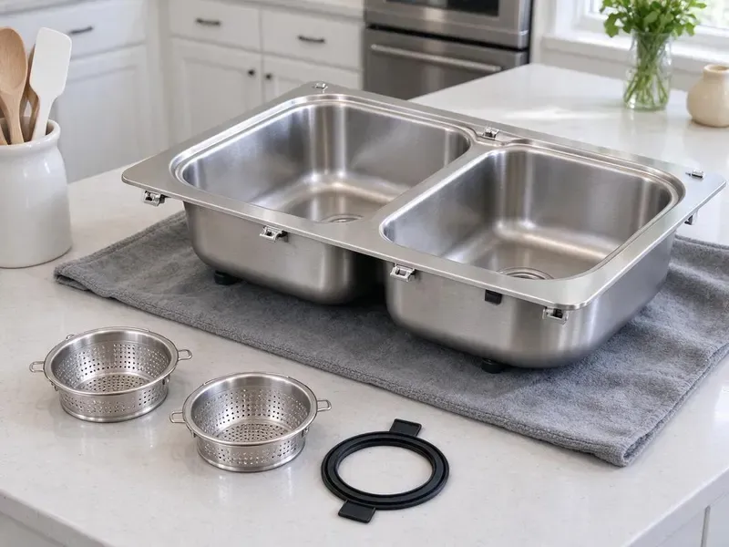

Kitchen Sink Installation in Apex, NC
HFN Plumbing installs undermount, farmhouse, drop-in and workstation sinks throughout Apex, NC, plus the disposal and faucet.
- Disposal and Dishwasher Connections
- Clear Pricing
- Prompt Install Scheduling
- Farmhouse and Undermount Installs

New Kitchen Sink to Install in Apex, NC?
We connect every drain and line so your new sink is ready the first day.
Careful Kitchen Sink Installation in Apex, NC
HFN Plumbing installs kitchen sinks with the support, sealing and drain layout each style needs. New basket strainers, traps, continuous waste and quarter-turn stops go in on every job, then we connect the faucet, disposal and dishwasher. Nothing drips in the cabinet.
Our expertise includes:
- Undermount clip and adhesive installs
- Corroded valve replacement with quarter-turn stops
- Strainer, trap and supply connections

Additional Kitchen Plumbing Services in Apex, NC
Our kitchen plumbing services in Apex, NC cover sinks, disposals, dishwashers, and grease traps so your kitchen keeps running without backups or leaks.


Customers
Why Choose HFN Plumbing for Kitchen Sink Installation in Apex, NC?
A new sink is only as good as the plumbing under it. Brass stops and Schedule 40 traps go in. Thin-wall tubular traps and plastic-nut supply lines are cheaper, but they are also the parts we replace most often on service calls.
- Local Experience, Our plumbers know the piping and pressure common in Apex homes and plan each install around it.
- Tidy Crews, We protect your counters and leave it clean when the sink is in.
- Full Hookups, Faucet, disposal, dishwasher and filter lines on the same trip.
Citywide Coverage
All parts of town get the same work. Older homes with galvanized drains and new builds with PVC both get new traps, new stops and a full leak test before we leave. Rentals get the same treatment.
Experienced Team
Plumbers at HFN Plumbing are trained in every part of kitchen plumbing, including heavy and unusual sinks. Two of them come for cast iron. They work clean, cover the counters, protect the floor and leave the cabinet the way they found it, minus the old sink.
Safety-First Approach
Safe work practices protect your home during the install. We shut the water off at the stops first. If the stops do not hold, we close the main and replace the stops before anything else, so a stuck valve cannot flood the cabinet halfway through the job in Apex.
Trusted Certified Apex Plumbing Services Professionals
At HFN Plumbing, we take pride in licensed, certified plumbing services throughout Apex, NC. Those papers on the wall mean something. Every repair, install and maintenance visit follows strict safety and quality rules, and the plumbers doing the work carry recognized industry credentials.
Call Us Now PHCC Plumbing Contractor Recognition
PHCC Plumbing Contractor Recognition Better Business Bureau (BBB) Accreditation
Better Business Bureau (BBB) Accreditation Angi Certified Pro
Angi Certified Pro ISO 9001 Quality Management Certification
ISO 9001 Quality Management CertificationKitchen Sink Installs We Handle in Apex, NC
Emergency Sink Replacement in Apex
A cracked bowl or a rusted-through strainer can soak a cabinet in an afternoon. First, close both angle stops and stop using the sink. Common stainless sizes ride on the truck. If you have a standard 33 by 22 inch drop-in, we can usually remove the damaged sink and set a new one that day.

Composite Sink Installation in Apex
Granite and quartz composite sinks are tough on top but can chip at the drain opening if a strainer is overtightened. We tighten by hand first. Composite makers usually call for silicone instead of plumber's putty under the strainer, since some putties stain the material, and we follow that sheet.
Undermount Kitchen Sink Installation in Apex
Undermount sinks rely on clips and adhesive to stay attached to granite or quartz. The bowl is mounted, the rim sealed with silicone and the sink braced while the adhesive sets, normally overnight before it can take a full bowl of water. Then come the strainers and trap.
Restaurant Sink Installation in Apex
Restaurants, cafes and commissary kitchens in Apex get their commercial sinks installed by HFN Plumbing. Hand sinks need hot and cold. We install three-compartment sinks, prep sinks and hand sinks with the indirect drains, floor sinks and grease trap connections the health inspector will look for.
Top-mount Sink Installation in Apex
Drop-in sinks are common in North Carolina homes with laminate or tile counters. The rim carries the weight. After checking the cutout, we lay silicone under the lip and draw the clips down evenly so the whole rim sits flat. Then the drain and faucet get connected and tested.
Workstation Sink Installation in Apex, NC
Workstation sinks have a ledge for cutting boards, colanders and drying racks, and most are single deep bowls with an offset drain. The trap layout follows the offset drain, which lets the disposal fit and leaves storage room on one side. Faucet reach matters too.
Granite and Quartz Composite Sinks in Apex
Composite sinks are heavier than stainless and usually thicker at the drain, so standard strainers sometimes need a longer threaded body. Strainer fit gets checked first. When the strainer is too short for the sink thickness, we replace it instead of cranking it down and chipping the drain opening.

Undermount Sinks on Stone in Apex, NC
Every fabricator handles undermount clips a bit differently. Some epoxy threaded studs into the stone, others use a rail system, and we work with whichever one your countertop shop prefers. Either way, the bowl gets braced. We do not connect the trap until the adhesive has cured.
Kitchen Sink Installation Near Me in Apex, NC
Your counters are being installed and the plumber needs to show up on time. We work in Apex every week and talk with your stone shop directly about templating and install dates. No gaps in the schedule.
Looking for a kitchen sink installer near you in Apex, NC? HFN Plumbing has plumbers working the area every week, so scheduling around your countertop date is easy. Book once the counters are templated. It leaves us room to order an odd strainer or an extended drain kit ahead of install day.
HFN Plumbing at a Glance
- Fully licensed plumbing team covering Apex, NC
- 24/7 emergency service with same-day scheduling
- Clear written estimates, no hidden fees
- 4.8-star rated by 840+ North Carolina customers
Apex Map
Apex Information
- Population
- 72,225
- Area codes
- 919/984/336
- Service area
- Apex and towns within a 40 mile drive
- Nearby
- Cary, Raleigh, Chapel Hill, Durham
Hot, humid summers are the main climate stress in North Carolina, bringing condensation on cold pipes and moisture problems in crawlspaces. Dense red clay is common in central parts of North Carolina, and it holds water and shifts with the seasons, stressing buried pipes.
Expert Services
Reach out to HFN Plumbing for reliable plumbing work done by licensed pros in Apex, NC.
Our Specialized Plumbing Services in Apex, NC
At HFN Plumbing, we handle the full list of plumbing services across Apex, NC. From leak detection to full system installs, our team works fast and charges fair prices on homes and commercial properties alike. Take a look at our core services below:


How a Kitchen Sink Install Works in Apex, NC
Here is how we take you from an empty cutout to a working sink.
Call With Your Details
Call (980) 364-4317 with your sink type and countertop schedule. We confirm the scope and quote it up front.
Prepare the Space
We remove the old sink, check the valves and drain, and reinforce the cabinet if the new sink is heavy.
Install and Test
We set the sink, connect the drains, faucet, disposal and dishwasher, and run water to test. Then we show you the work and clean up.
Frequently Asked Questions About Kitchen Sink Installation in Apex
A basic drop-in install usually costs $300 to $600 in labor. Undermount and farmhouse installs typically run $450 to $1,200, and adding a disposal or moving the drain adds another $150 to $600 depending on the work. We quote it flat.
A simple drop-in swap is a fair DIY job. Undermount, farmhouse and double-bowl installs with a disposal are where most DIY jobs leak, usually at the strainer, a slip joint or the disposal flange. A slow drip will rot the base.
Yes. The faucet, disposal and dishwasher drain can all be hooked up on install day. It is often easier to mount the faucet before the sink goes in, because you can tighten it from above rather than with a basin wrench from underneath.
Yes. HFN Plumbing guarantees the labor on every sink install. Terms are written on your invoice, and the sink, faucet and disposal each carry a manufacturer warranty that we help you register.
We see a lot of Kohler, Elkay, Moen, Blanco and Franke. Other brands are fine too, and we follow the maker's install sheet on anything unfamiliar because clip and drain specs differ.
Every install from HFN Plumbing comes with a labor warranty. You get the terms in writing. Should a joint we made leak during the warranty period, we return and fix it, while the makers cover the sink and faucet themselves.
Stainless steel, cast iron, granite composite, fireclay and copper, in drop-in, undermount, apron-front and workstation styles. Copper needs care. With copper we use brass strainers and the right trap fittings so the sink is not in direct contact with steel, which prevents galvanic corrosion.
Leaks around the rim that new caulk does not fix, cracks, chips through the enamel, rust spots or stains that will not clean all point to replacement. Chipped cast iron rusts. After a chip reaches bare iron, rust works under the enamel and the damage keeps spreading.
What Our Customers Say About Our Plumbing Experts

Jessica T.
We were adding a gas range in a kitchen remodel and needed a new line run from the meter. The plumber pulled the permit, ran the pipe through the crawl space, and had it inspected and approved within the week.
Gas Line Repair · Cary, NC
Nathan E.
Our tankless heater kept throwing an error code and shutting off mid shower. The tech flushed the heat exchanger, which was full of scale, and replaced a bad flow sensor. Hot water has been steady for half a year now.
Water Heater Repair · Wake Forest, NC
Brian W.
I smelled gas behind the dryer and called right away. The plumber found a corroded flex connector, replaced it, and pressure tested the whole line before turning the gas back on. He let me watch the gauge hold steady for fifteen minutes.
Gas Line Repair · Chapel Hill, NCMark T.
The floor drain in our office break room backed up every few weeks. The plumber ran a cable, then put a camera down and found roots at a joint about thirty feet out. Seeing it on the screen made the decision easy.
Drain Cleaning · Burlington, NCCarlos V.
Our house still had galvanized pipe, and upstairs the shower was a trickle. The crew repiped everything in PEX over three days and patched every drywall hole before they left. The pressure difference is night and day.
Repiping · Raleigh, NCTyler J.
We bought a taller comfort height toilet for my dad, who just had knee surgery. The plumber pulled the old one, found the flange was cracked, and replaced it before setting the new bowl. Took about two hours.
Toilet Installation · Apex, NC